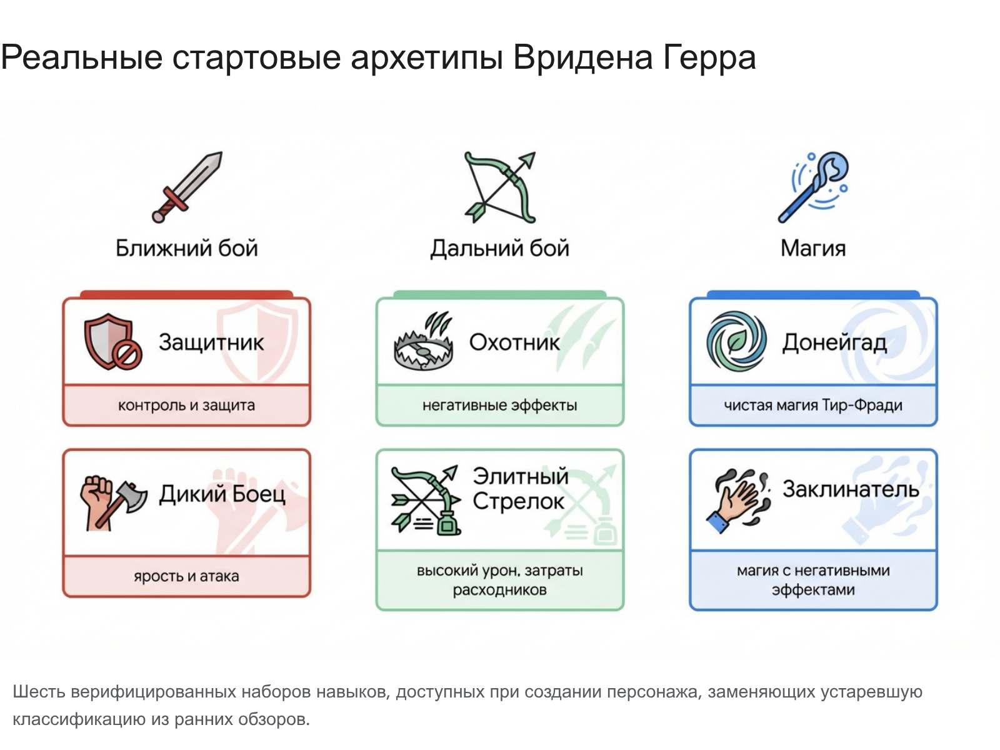
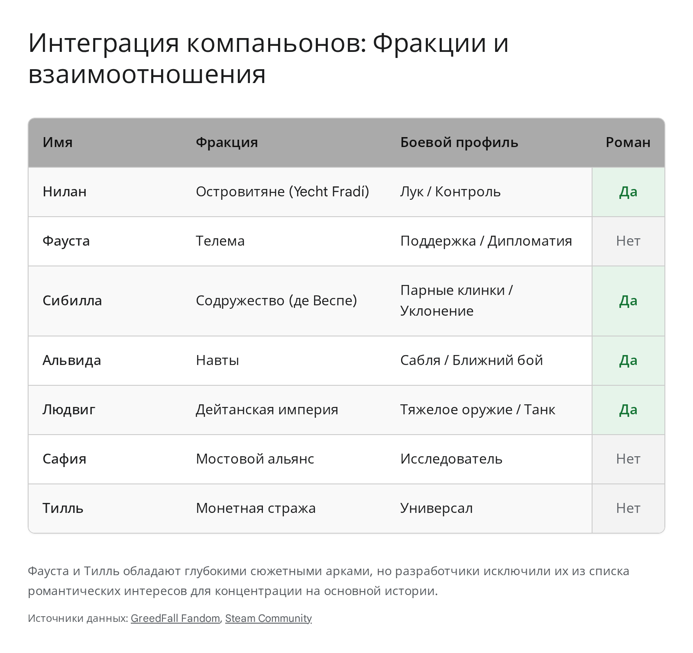

1) Архитектура персонажа
В GreedFall главный герой — Вриден Герр, а эффективный старт завязан на осознанном выборе архетипа и гибкой прокачке, а не на «чистом» одном классе.

- Ближний бой: Protector и Wild Fighter для контроля линии фронта.
- Дальний бой: Hunter и Elite Shooter для дебаффов и точечного урона.
- Магия: Doneigad и Spell Caster для контроля поля и ослабления врагов.
- Практика: комбинируйте ветки, чтобы не упереться в тактический потолок.
PDF: Expanded Phase Guide
1. Архитектура протагонистаполезно
Кто герой и почему это влияет на маршрут: Вриден Герр — носитель иммунитета к Малихору и центральная фигура конфликта между научными, религиозными и военными группами Гакане. Это важно, потому что твой билд должен одинаково хорошо переживать и сюжетные бойни, и длинные политические ветки без перекачки с нуля.
Подтвержденные стартовые архетипы (без мифов раннего доступа):
- Protector: фронтлайн, поглощение урона, контроль агрессии врагов.
- Wild Fighter: агрессивный мили-урон и быстрый размен.
- Hunter: безопасная дистанция и дебаффы по приоритетным целям.
- Elite Shooter: критический дальний урон ценой расходников.
- Doneigad: стихийный контроль поля и поддержка отряда.
- Spell Caster: проклятия, ослабления и токсичные связки магии.
Рабочая схема прокачки под платину:
- В первые часы собирай ядро выживаемости (HP/сейвы/контроль), а не пиковый урон.
- Строй гибрид: одна ветка на стабильность боя, вторая на контроль или добивание.
- Распределяй атрибуты (Сила, Ловкость, Восприятие, Воля, Выносливость, Концентрация) только под реальное оружие и ротацию умений.
Анти-ошибки фазы:
- Не вкладывай все очки в один стат или один тип урона.
- Не тащи в поздние главы «сырой» билд без контроля толпы.
- Не игнорируй вспомогательные таланты, которые раскрывают трофейные условия позже.
К переходу в фазу 2: выбран архетип, собран план гибридизации, понятна роль героя в бою (инициатор, контроллер или добивающий).
2) Эволюция боевой модели
GreedFall ушел в сторону RTwP: успех зависит от паузы, очередей действий и точного позиционирования отряда, а не от спама навыков.
- Tactical: полный ручной контроль, оптимален для сложных боев и боссов.
- Hybrid: компромиссный режим с меньшей микроменеджмент-нагрузкой.
- Focused: максимально «сюжетный» темп с акцентом на динамику.
- Важно: Friendly Fire работает полноценно — AOE легко задевает своих.
PDF: Expanded Phase Guide
2. Эволюция боевой системыполезно
Что изменилось в бою: игра работает как RTwP-система. На сложных стычках решают паузы, очереди команд и геометрия позиции, а не скорость нажатий.
Когда включать каждый режим:
- Tactical: боссы, элитные пачки, трофейные ситуации, где важна точность.
- Hybrid: стандартный маршрут по карте и средние бои без перегруза микроконтролем.
- Focused: легкие зоны и сюжетные отрезки, где приоритет - темп прохождения.
Базовый цикл боя (рабочий шаблон):
- Пауза -> метка приоритетной цели -> расстановка отряда по секторам.
- Сначала контроль/дебафф, потом массовый урон, в конце добивание.
- Сразу перепланируй очередь, если враг сменил позицию или влетел во фланг.
Friendly Fire - обязательный контроль: твои AOE, ловушки и взрывные умения бьют союзников. Перед каждым массовым кастом проверяй траекторию, иначе можно сорвать бой и трофейные условия.
Экономика AP и кулдаунов: не прожигай сильные кнопки в первый же такт. Оставляй ресурс на перехват врага, который прорывает тыл или фокусит слабого компаньона.
К переходу в фазу 3: у тебя отработан паттерн «пауза -> команда -> перепозиция», а вайпы из-за Friendly Fire сведены к минимуму.
3) Экосистема компаньонов
Спутники в GreedFall — это не фон. Состав группы влияет на бои, дипломатические проверки и доступ к развилкам в заданиях.

- Нилан: контроль дистанции и ранняя стабильность.
- Сибилла: сильная синергия с дипломатией и уклонением.
- Альвида/Людвиг: сильная передняя линия под тяжелые стычки.
- Фауста/Тилль: полезные сюжетные арки, но ограничения по романам.
- Сафия: исследовательский уклон и поддержка отряда.
- Правило: держите в группе тех, кто усиливает текущую цель фазы.
PDF: Expanded Phase Guide
3. Экосистема компаньоновполезно
Ключевая механика фазы: в активном отряде одновременно только два компаньона. Их выбор влияет не только на урон и выживание, но и на диалоговые проверки, политические исходы и доступ к веткам заданий.
Проверенный состав спутников и практическая польза:
- Нилан (с ранней игры): дальний бой, бонус к выживанию при хороших отношениях, полезен для безопасного старта.
- Сибилла (с 10 уровня): мобильный ближний бой, бонус к дипломатии, одна из самых полезных для социальных проверок.
- Альвида (с 10 уровня): фронтлайн, бонус к механике, важна для линий Навтов и технических задач.
- Людвиг (с 11 уровня): плотный «танк», тоже даёт бонус к механике, стабилизирует тяжелые бои.
- Фауста: сильна для интриг и сюжетных развилок Телемы, но без роман-ветки.
- Тилль: бонус к ремеслу при высокой лояльности, ценен для экономии очков на крафт.
- Сафия: исследовательский и лор-ориентированный спутник, усиливает «безошибочный» темп прохождения.
Важный нюанс: Шэда встречается на обучающем отрезке, но не является постоянным поздним спутником для макромаршрута к платине.
Система одобрения и риск провалов: отношения с компаньонами зависят от диалогов и политических выборов. Падение одобрения может закрыть личную ветку или привести к уходу спутника.
Анти-миф по Тиллю: «сломанный скрипт» обычно оказывается не багом, а точкой невозврата: если слишком быстро проталкивать основной сюжет, личные поручения компаньонов получают статус «Провалено».
Рабочая ротация группы:
- Боевые миссии: один фронтлайн + один контроль/дистанция.
- Городские и судовые проверки: спутник с дипломатическим бонусом + технический спутник.
- Перед крупной сюжетной точкой: сначала закрыть все новые личные квесты, потом двигать мейн-квест.
К переходу в фазу 4: собран основной боевой дуэт, закрыты ключевые ветки лояльности, нет висящих личных квестов перед политическим блоком.
4) Геополитика и маршруты
Континент живет фракционными конфликтами, и это напрямую влияет на доступность квестов, переговоров и финальных условий по трофеям.

- Мостовой Альянс: сильная научная линия и технологические цепочки.
- Дейтанская Империя: милитарная мощь и конфликтный политический фон.
- Телема/Содружество: дипломатический вес и чувствительные репутационные развилки.
- Практика: сначала закрывайте локальные ветки региона, потом двигайтесь дальше.
PDF: Expanded Phase Guide
4. Политический ландшафтполезно
Смысл фазы: политическая карта в GreedFall - это не фон, а система блокировок/доступов. Неправильный порядок визитов режет побочные квесты и ломает часть трофейного маршрута.
Ключевые силы континента и их роль:
- Bridge Alliance: наука, технологии, сложные цепочки решений и внутренний конфликт элит.
- Deutan Empire: военный кризис и религиозный раскол, много рискованных развилок.
- Thélème: теократическая линия с жёсткими идеологическими проверками.
- Содружество торговцев: прагматичная политика, доступ к важным квестовым посредникам.
- Навты/островные интересы: критичны для перемещений, отдельных судовых и судебных веток.
Локации высокого влияния:
- Олима: научный центр, где часто решается судьба «технологических» цепочек.
- Перен: зона упадка и катакомб, важная для Black Mass и мрачных сюжетных веток.
- Уксантис: закрытая территория Навтов и ключевая арена для рискованных трофеев.
Рабочий порядок прохождения региона:
- Сначала открыть все локальные квесты и диалоги фракции.
- Потом закрыть спутниковые поручения, привязанные к этой территории.
- Только после этого двигать крупный сюжетный триггер.
Анти-ошибки:
- Не прыгай хаотично между тремя регионами одновременно.
- Не выходи из зоны, пока не проверил незавершенные политические диалоги.
- Перед каждым большим выбором делай отдельный ручной сейв.
К переходу в фазу 5: в текущих регионах закрыты важные side-цепочки, компаньонские хвосты и репутационные решения без «подвисших» условий.
5) Допконтент без потерь
Сюжетное расширение лучше проходить в середине маршрута, когда уже открыт стабильный состав отряда, но еще не достигнута финальная точка невозврата.
- Когда заходить: после стабилизации билда и ключевых веток компаньонов.
- Что проверять: репутации фракций и доступность побочных условий.
- Цель: интегрировать DLC без конфликтов с основным прогрессом.
- Риск-менеджмент: ручной сейв перед стартом каждой длинной сюжетной цепочки.
PDF: Expanded Phase Guide
5. Аудит Black Massполезно
Что это за блок: Black Mass - сюжетное расширение с отдельной детективной линией в Перене (порядка 90 минут), связанной с еретическими ритуалами и искажением магии Света.
Тайминг релиза и планирование: по твоему исходному гайду глобальный выпуск пакета указан на 14 мая 2026. Для маршрута к платине его лучше учитывать в середине кампании, а не в самом финале.
Почему проходить в середине:
- билд и отряд уже устойчивые, но точки невозврата еще не срезали контент;
- награды DLC успевают отработать в оставшейся части прохождения;
- ниже риск поломать фракционные ветки из-за позднего старта.
Что дает по геймплею:
- Black Mass outfit - полезен для темных/гибридных сборок.
- Black Magic rings - усиливают вариации магии и контрольные связки.
- Дополнительный лор по Телеме и смежным политическим конфликтам.
Риск-менеджмент перед стартом DLC:
- сделай отдельный manual save;
- закрой срочные личные квесты компаньонов;
- проверь, что нет фракционных цепочек на скрытом дедлайне.
К переходу в фазу 6: DLC интегрирован без конфликтов, награды получены, основной сюжет и трофейный маршрут не сломаны.
6) Самые критичные трофеи
Гайд подтверждает: список достижений состоит из 53 трофеев, а часть популярных условий из ранних материалов оказалась ошибочной.
- Objection!: судебная цепочка с полной проверкой улик и дипломатии.
- Friendly fire: отправить союзника в нокаут собственной атакой.
- Mastodon: одновременно поддерживать 7 положительных эффектов на одном союзнике.
- Master of my domain: довести атрибут и талант до максимума.
PDF: Expanded Phase Guide
6. Стратегия получения платиныполезно
Факт-чекинг фазы: верифицированный лист содержит 53 трофея. Популярные старые условия из неактуальных гайдов (вроде «Seasoned Veteran») в этом маршруте не используются.
Ключевые трофеи и реальные условия:
- Doneigad: максимальное развитие Вридена (можно пропустить при игноре сайдов).
- Mastodon: 7 положительных эффектов на одном союзнике одновременно.
- Tracker: обнаружить и выкопать скрытый сундук (нужна прокачка Восприятия).
- Fearsome killer: суммарно 250 убийств за прохождение.
- Friendly fire: нокаутировать союзника своей атакой/ловушкой.
- Speaker: успешно пройти дипломатическую проверку в диалоге.
- Master of my domain: довести один атрибут и один талант до максимума.
- Allies of fortune: освобождать существ/монстров из клеток браконьеров.
- Objection!: идеальное судебное слушание по линии «The Isle of the Nauts».
Протокол для Objection! (самый рискованный):
- собери полный пакет улик до суда;
- закрой нужные разговоры (включая Carpenter и Fishmonger);
- держи бонус к дипломатии (плащ + Сибилла в отряде);
- сохраняйся перед каждым критичным диалогом;
- не уходи в силовой сценарий, если цель - юридическое оправдание.
Практика без перепрохождения: веди раздельные контрольные сейвы под суд, дипломатию и боевые спец-условия. Это снижает риск полного реруна из-за одной пропущенной развилки.
К переходу в фазу 7: спорные трофеи проверены, отдельные сейвы под missable готовы, юридические и дипломатические условия закрыты.
7) Контроль дедлайнов
Самая частая причина потери 100% — позднее закрытие побочных веток. В GreedFall это критично, особенно перед сбором отряда на финальный поход.
- Правило 1: квесты компаньонов закрываются сразу после появления.
- Правило 2: перед «Gather your Companions...» карта должна быть полностью дочищена.
- Правило 3: отдельный ручной сейв до финального выбора концовки.
PDF: Expanded Phase Guide
7. Оптимизация макро-прохожденияполезно
Главный риск фазы: потери 100% чаще происходят не на боссах, а на таймингах. Ветки квестов могут закрыться раньше «официального» финального предупреждения.
4 правила безошибочного макромаршрута:
- Все личные квесты компаньонов закрывай сразу после появления.
- Локальные фракционные поручения не оставляй «на потом» перед мейн-кризисом.
- Возвращайся к квестодателям вручную, даже если журнал молчит.
- Перед каждым крупным сюжетным толчком делай manual save с понятным названием.
Критическая точка невозврата: директива Gather your Companions Before Going to the Sanctuary. После подтверждения этого шага свободное исследование и часть незавершенных активностей блокируются.
Pre-final чек перед костром/триггером:
- карта дочищена, сундуки и важные активности проверены;
- репутационные цели по нужным фракциям достигнуты;
- все спутниковые ветки закрыты без «провалено»;
- есть отдельный сейв до финального выбора и арены босса.
Финальный моральный выбор: после ключевого боя игра не дает полноценный post-game free roam, поэтому сейв перед кульминацией обязателен, если хочешь обе концовки и безопасный откат.
К переходу в фазу 8: у тебя полный контроль по дедлайнам, нет висящих квестов, и финальный блок проходится без риска потерять платину на последних минутах.
8) Финал маршрута
Если все фазы закрыты, отмечай итоговый чек-лист. После 100% прогресса откроется модальное окно с карточкой ачивки.
- Обязательный минимум: закрыты все фазы 1-7 и их тактические пункты.
- Проверка: все missable трофеи подтверждены до финального акта.
- Итог: платина без повторной переделки больших квестовых веток.
PDF: Expanded Phase Guide
Заключение по гайдуполезно
Что считается «чистым закрытием» маршрута: завершены все фазы 1-7, по каждой проставлены чек-листы, а ключевые missable-трофеи закрыты через контрольные сейвы.
Финальный протокол перед отметкой «Платина получена»:
- проверены трофеи с повышенным риском: Objection!, Friendly fire, Mastodon;
- закрыты хвосты по отношениям и фракционным заданиям;
- сделан отдельный сейв до финального сюжетного выбора;
- в сводном чек-листе нет ни одного пустого пункта.
Если не хватает 1-2 условий: возвращайся к сейвам из фазы 6-7, добирай конкретный триггер и снова сверяй итоговый чек-лист. Это быстрее, чем полный реран кампании.
После 100%: отметь финальный чекбокс, получи модальное поздравление и скачай ачивку. Карточка формируется как итог твоего полного прохождения по дорожной карте.
Практический смысл гайда: не «скорость любой ценой», а контролируемый путь к платине без потери контента и без обнуления часов из-за одной пропущенной развилки.
Чтобы получить ачивку, нужно закрыть все чек-листы в фазах. Если пропустил часть контента при чтении, отмечай здесь — после 100% откроется поздравление и карточка.